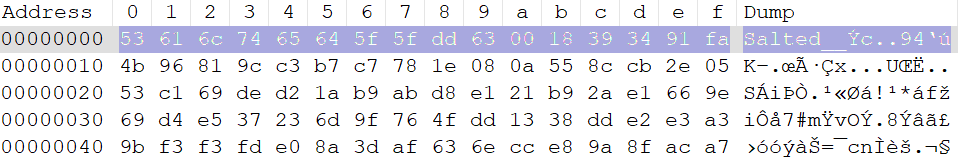

SAD - U2.3. Funciones Resumen
Índice
1. Funciones Hash

Una función hash criptográfica es un tipo especializado de función resumen diseñada para su uso en diversas aplicaciones criptográficas, incluidas firmas digitales, códigos de autenticación de mensajes y otras formas de autenticación. Estas funciones desempeñan un papel crucial en las prácticas modernas de seguridad de la información, particularmente en protocolos como SSL/TLS.
Es una función matemática unidireccional que opera sobre un documento digital, secuencia digital numérica, etc., todos de gran tamaño medido en bits, y brinda como resultado un valor más pequeño y de tamaño fijo, cualquiera sea su entrada, que se utiliza en aplicaciones criptográficas que protegen la integridad de la información.
Las funciones hash criptográficas poseen varias propiedades esenciales que las distinguen de otras funciones hash:
| Propiedad | Descripción |
|---|---|
| Determinista | El mismo mensaje de entrada siempre produce el mismo valor hash. |
| Eficiencia | El valor hash se calcula rápidamente, independientemente del tamaño de entrada. |
| Resistencia a la colisión | Es computacionalmente inviable encontrar dos mensajes diferentes que produzcan el mismo valor hash. No es imposible, pero sí improbable. |
| Resistencia a la preimagen | Dado un valor hash, no es factible crear un mensaje que produzca ese hash específico. |
| Efecto avalancha / Difusión | Pequeños cambios en el mensaje de entrada dan como resultado cambios significativos y aparentemente no correlacionados en el hash de salida. |
No es cifrado
Las funciones hash criptográficas no son algoritmos de cifrado, ya que no se pueden deshacer. Es decir, no se puede recuperar el mensaje original a partir del valor hash.
En cambio, se utilizan para verificar la integridad de los datos y garantizar que no se hayan modificado.
1.2 Aplicaciones de funciones hash criptográficas
Las funciones hash criptográficas tienen numerosas aplicaciones en ciberseguridad:
- Firmas digitales: se utiliza para crear un resumen de tamaño fijo de un mensaje, que luego se cifra con la clave privada del remitente.
- Verificación de la integridad del archivo: Los sitios web suelen publicar valores hash para archivos descargables, lo que permite a los usuarios verificar la integridad del archivo después de la descarga.
- Contraseña de Seguridad: Las contraseñas normalmente se almacenan como hashes en lugar de texto sin formato, lo que mejora la seguridad.
- Tecnología Blockchain: Las criptomonedas como Bitcoin utilizan funciones hash criptográficas (por ejemplo, SHA-256) para mantener la integridad y seguridad de los registros de transacciones.
- SSL /TLS Protocolos: Estos protocolos de comunicación seguros dependen en gran medida de funciones hash criptográficas para diversos mecanismos de seguridad.
1.3 Funciones hash más comunes
1.3.1. MD5 (Message Digest Algorithm 5)
MD5 es una función hash criptográfica que produce un valor hash de 128 bits. Aunque fue ampliamente utilizado en el pasado, MD5 se considera obsoleto y se ha demostrado que es vulnerable a colisiones, lo que significa que dos mensajes diferentes pueden producir el mismo valor hash.
1.3.2. SHA-1 (Secure Hash Algorithm 1)
SHA-1 es una función hash criptográfica que produce un valor hash de 160 bits. Al igual que MD5, SHA-1 se considera obsoleto y vulnerable a colisiones.
1.3.3. SHA-2 (Secure Hash Algorithm 256)
Una familia de funciones hash que producen resúmenes de varios tamaños: 224, 256, 384 o 512 bits.
SHA-256 (versión de 256 bits) es la variante más utilizada y produce una salida hexadecimal de 64 caracteres.
Ampliamente adoptado en protocolos de seguridad como SSL/TLS.
1.3.4. SHA-3 (Secure Hash Algorithm 3)
SHA-3 es una función hash criptográfica que produce un valor hash de 224, 256, 384 o 512 bits. Es la última adición a la familia de funciones hash SHA y se considera seguro para su uso en aplicaciones criptográficas.
1.3.5 HMAC (Hash-based Message Authentication Code)
En criptografía, un código de autenticación de mensaje (MAC), es una información breve (resumen) que se utiliza para autenticar un mensaje; en otras palabras, para confirmar que el mensaje proviene del remitente indicado (su autenticidad) y que el mensaje no haya sido alterado.
Los valores MAC se calculan mediante la aplicación de una función hash criptográfica con clave secreta K, que sólo conocen el remitente y destinatario, pero no los atacantes. El valor MAC protege tanto la integridad de los datos de un mensaje como su autenticidad, al permitir que los verificadores (que también poseen la clave secreta) detecten cualquier cambio en el contenido del mensaje.
Los algoritmos MAC pueden construirse a partir de otras primitivas criptográficas, como las funciones criptográficas hash (como en el caso de HMAC ).
El código de autenticación de mensaje basado en MAC (HMAC) es un algoritmo de autenticación de mensajes basado en funciones hash criptográficas. Combina un valor hash con una clave secreta para producir un código de autenticación de mensajes que se puede utilizar para verificar la integridad y la autenticidad de un mensaje.
HMAC se utiliza en una variedad de aplicaciones de seguridad, incluidos protocolos de autenticación como OAuth y TLS.
2. Funciones HASH con OpenSSL
OpenSSL es una biblioteca de software que implementa protocolos y algoritmos de cifrado seguros. Es ampliamente utilizada en aplicaciones de software para garantizar la seguridad de la información.
2.2. Uso de OpenSSL para funciones resumen
Para proceder a cifrar o descifrar mensajes se hará uso del comando dgst. Este comando permite calcular el valor hash de un mensaje utilizando una función hash específica.
El subcomando dgst -list lista los algoritmos simétricos disponibles en la instalación de OpenSSL.
$ openssl dgst -list
Supported digests:
-blake2b512 -blake2s256 -md4
-md5 -md5-sha1 -mdc2
-ripemd -ripemd160 -rmd160
-sha1 -sha224 -sha256
-sha3-224 -sha3-256 -sha3-384
-sha3-512 -sha384 -sha512
-sha512-224 -sha512-256 -shake128
-shake256 -sm3 -ssl3-md5
-ssl3-sha1 -whirlpool
En esta lista pueden verse algunos datos importantes: algoritmos de resumen disponibles (MD5, SHA1, SHA2, SHA3, Blake, RIPMD, SHAKE) y longitud de bits de los resúmenes (128, 160, 224, 256,512).
2.2.1. Cálculo de resúmenes
Para calcular el resumen de un mensaje, se utiliza el comando dgst seguido del algoritmo de resumen deseado y el archivo de entrada. Por ejemplo, para calcular el resumen SHA-256 de un archivo llamado mensaje.txt, se utiliza el siguiente comando:
$ echo "Hola, mundo" > mensaje.txt
$ openssl dgst -sha256 mensaje.txt
SHA256(mensaje.txt)= b54e884a20812eb4b4b9653b673eddbec0b0d6ca25d12849b3d40275e99a97cb
Podemos usar varios modificadores para personalizar la salida del comando dgst:
-hex: Muestra el resumen en formato hexadecimal (opción por defecto si no se indica ninguna).-
-r: Muestra el resumen en formato coreutils.
-c: Muestra el resumen en formatoAA:BB:CC:......binary: Muestra el resumen en formato binario.-out archivo: Guarda el resumen en un archivo.
2.2.2. Calculo de resúmenes HMAC
HMAC puede usarse para verificar simultáneamente la integridad de los datos y la autenticación de un mensaje, como con cualquier MAC. Cualquier función hash criptográfica, como SHA256 o SHA-3, puede ser utilizado en el cálculo de un HMAC; el algoritmo MAC resultante se denomina HMAC-X, donde X es la función hash utilizada (por ejemplo, HMAC-SHA256 o HMAC-SHA3).
Para calcular un resumen HMAC, se utiliza el comando dgst seguido del algoritmo de resumen deseado y la clave secreta. Por ejemplo, para calcular el resumen HMAC-SHA256 de un archivo llamado mensaje.txt con la clave secreta secreto, se utiliza el siguiente comando:
$ openssl dgst -sha256 -hmac "secreto" mensaje.txt
HMAC-SHA256(mensaje.txt)= e2207fafe0cc81dcfb8a648373851b1005148b4d9b226b6696d7fd243c80768a
Ahora podríamos enviar al destinatario el mensaje.txt (cifrado o no), y el HMAC generado. El destinatario podrá realizar el mismo procedimiento de cálculo del HMAC (sobre el archivo no cifrado), y comparar la salida con el que enviamos.
Si un atacante intercepta el mensaje, no podrá modificarlo ya que, al no poseer la clave de autenticación, no podrá regenerar un HMAC válido para que el destinatario verifique.
Así, si el destinatario calcula el HMAC y da correcto, implica que:
- El mensaje no fue modificado, verifica integridad.
- El HMAC únicamente pudo haber sido generado por el origen, que dispone de la clave de autenticación, por lo que también verifica autenticidad.
- Además, como se supone que el origen es el único que tiene la clave de autenticación, no puede desentenderse de haber firmado el mensaje, así que verifica no repudio también.
Para cifrar un archivo de texto plano, utilizamos el siguiente comando:
$ echo "Hola, mundo" > mensaje.txt
$ openssl enc -e -aes-256-cbc -salt -in mensaje.txt -out mensaje.enc
enter aes-256-cbc encryption password:
Verifying - enter aes-256-cbc encryption password:
*** WARNING : deprecated key derivation used.
Using -iter or -pbkdf2 would be better.
En este caso, el comando enc cifra (-e) el archivo mensaje.txt (-in) utilizando el algoritmo AES con una clave de 256 bits en modo CBC (-aes-256-cbc). El archivo cifrado se guarda en mensaje.enc (-out).
Podemos observar el mensaje de que se está utilizando una derivación de clave obsoleta. Para evitarlo, podemos utilizar la opción -pbkdf2 para usar la función de derivación de clave PBKDF2.
Para descifrar el archivo cifrado, utilizamos el siguiente comando:
$ openssl enc -d -p -aes-256-cbc -in mensaje.enc -out mensaje.dec
enter aes-256-cbc decryption password:
salt=86239987878B82C6
key=37081952A242A1720D09A0AB511DD7AE34F90AAF1EFAB9A90B76FA0C6044C95C
iv =629F89ACCDE7F852B54AD9A0AA4F2B0E
En este caso, el comando enc descifra (-d) el archivo mensaje.enc (-in) utilizando el algoritmo AES con una clave de 256 bits en modo CBC (-aes-256-cbc). El archivo descifrado se guarda en mensaje.dec (-out). Además, hemos usado el modificador -p para que se muestre información adicional (Salt, Key, IV) sobre el proceso de cifrado/descifrado.
El archivo mensaje.enc es un archivo binario que contiene el texto cifrado. Si intentamos abrirlo con un editor de texto, o con el comando type (windows) o cat (Linux) veremos caracteres extraños.
Si queremos generar un archivo cifrado, pero que solo contenga caracteres ASCII, podemos utilizar la opción -a para que el archivo cifrado sea codificado en base64.
$ openssl enc -e -aes-256-cbc -pbkdf2 -a -in mensaje.txt
enter aes-256-cbc encryption password:
Verifying - enter aes-256-cbc encryption password:
U2FsdGVkX1/bxhJnZxZH39gxnhOd7/QyB2yDcexnLE2nnlJ1+EZH3ka3z2oHOvMR
TQk6dQ7CwLJ7tLIFeUId1jbvYVxgMTGE99kJHikaD4x8Kf8Jw3/LsQmRPLRHnUiZ
En el ejemplo anterior ya se ha usado la opción -kbkdf2 para evitar el mensaje de advertencia y suar un algoritmo de derivación de clave más seguro. También se ha usado la opción -a para que el archivo cifrado sea codificado en base64 y se ha omitido la opción -out para que el resultado se muestre por pantalla.
TRIPLE DES
DES es el algoritmo prototipo del cifrado por bloques. Su clave es de 56 bits, lo que lo hace vulnerable a ataques de fuerza bruta. Para aumentar la seguridad, se creó 3DES, que aplica DES tres veces a cada bloque de datos. Aunque es más seguro, es más lento que DES.
La mayoría de las tarjetas de crédito y otros medios de pago electrónicos tienen como estándar el algoritmo Triple DES (anteriormente usaban el DES). Por su diseño, el DES y por lo tanto el 3DES son algoritmos lentos. AES puede llegar a ser hasta 6 veces más rápido y a la fecha no se ha encontrado ninguna vulnerabilidad
Existen diferentes tipos de TDES, aunque el más utilizado es el EDE3 (Encrypt-Decrypt-Encrypt) con dos claves DES diferentes. En el siguiente ejemplo se cifra un archivo con 3DES:
openssl enc -des-ede3-cbc -p -in mensaje.txt -out des_ede3_cbc.enc
salt=AB5835474350C692
key=D9A1F0F149CB70901A2411C5607BEA89C9DFF9786B018DF7B2158967D42B0D4D
iv =4AE3E7B85BE8AE5C752187CFC0CC9672
Y a continuación se descifra:
openssl enc -d -des-ede3-cbc -p -in des_ede3_cbc.enc
salt=AB5835474350C692
key=D9A1F0F149CB70901A2411C5607BEA89C9DFF9786B018DF7B2158967D42B0D4D
iv =4AE3E7B85BE8AE5C752187CFC0CC9672
"Hola, mundo"
Note
También podemos descifrar el mensaje sin conocer la contraseña, si conocemos el resto de los parámetros (salt, key, iv). Esto es útil para recuperar mensajes cifrados en caso de pérdida de la contraseña.
openssl enc -d -des-ede3-cbc -in des_ede3_cbc.enc -K D9A1F0F149CB70901A2411C5607BEA89C9DFF9786B018DF7B2158967D42B0D4D -iv 4AE3E7B85BE8AE5C752187CFC0CC9672
ÃhÁs{N╣µ·¦mtæ┬óh═åÅundo"
Como vemos, el SALT que se ha añadido al mensaje cifrado, ha modificado el mensaje original. Assí que, para recuperar el mensaje original, necesitamos eliminar el SALT del mensaje cifrado.
- Editamos el archivo cifrado (es binario) en modo hexadecimal y eliminamos de la cabecera los primeros 8 bytes ("Salted__") y los siguientes 8 bytes (el valor del SALT).
- En linux lo podemos hacer con
dd:cat des_ede3_cbc.cif | dd ibs=16 obs=16 skip=1 > des_ede3_cbc_nosalt.enc

Una vez eliminado el SALT, procedemos a descifrar el archivo usando la clave y el vector de inicialización.
openssl enc -d -des-ede3-cbc -in des_ede3_cbc_nosalt.enc -K D9A1F0F149CB70901A2411C5607BEA89C9DFF9786B018DF7B2158967D42B0D4D -iv 4AE3E7B85BE8AE5C752187CFC0CC9672
"Hola, mundo"
AES (Advanced Encryption Standard)
AES, también conocido como Rijndael (pronunciado "Rain Doll" en inglés), es un esquema de cifrado por bloques adoptado como un estándar de cifrado por el gobierno de los Estados Unidos. Desde 2006, el AES es uno de los algoritmos más populares usados en criptografía simétrica.
Daemen & Rijmen
El cifrado fue desarrollado por dos criptólogos belgas, Joan Daemen y Vincent Rijmen, ambos estudiantes de la Katholieke Universiteit Leuven, y fue enviado al proceso de selección AES bajo el nombre "Rijndael".
Fueron los ganares del concurso AES, y el algoritmo fue seleccionado como el estándar de cifrado simétrico por el Instituto Nacional de Estándares y Tecnología (NIST) en 2001.
Se trata de un algoritmo del que todavía no se ha registrado ningún ataque factible hacia él, convirtiéndose en un estándar de cifrado para las principales organizaciones como bancos, gobiernos y sistemas de alta seguridad en todo el mundo. Además, es un estándar mucho más rápido que los vistos anteriormente.
Basado en la estructura de bloques de AES, el cambio de un solo bit, ya sea en la clave, o en el bloque de texto sin cifrado, da como resultado un bloque de texto cifrado completamente diferente. Este algoritmo tiene una longitud de bloque de 128 bits y longitudes de clave de 128, 192 y 256.
En el primer ejemplo del apartado anterior, hemos cifrado un archivo de texto plano con AES y una clave de 256 bits en modo CBC.
2.2.2. Cifrado simétrico de flujo
Para algunas aplicaciones, tales como el cifrado de conversaciones telefónicas, el cifrado en bloques es inapropiada porque los flujos de datos se producen en tiempo real en pequeños fragmentos. Las muestras de datos pueden ser tan pequeñas como 8 bits o incluso de 1 bit, y sería un desperdicio rellenar el resto de los 64 bits antes de cifrar y transmitirlos.
Los cifradores de flujo son algoritmos de cifrado que pueden realizar el cifrado incrementalmente, convirtiendo el texto en claro, en texto cifrado bit a bit, es decir, cada dígito de texto sin formato se cifra uno a la vez con el dígito correspondiente de la secuencia pseudoaleatoria, para dar un dígito del flujo de texto cifrado. Una secuencia pseudoaleatoria es una secuencia de bits de tamaño arbitrario que puede emplearse para oscurecer los contenidos de un flujo de datos combinando esta secuencia con el flujo de datos mediante la función XOR. Si la secuencia pseudoaleatoria es segura, el flujo de datos cifrados también lo será. Los bloques se cifran empleando una clave compartida por el emisor y el receptor.
Uno de los algoritmos de flujo más utilizados es el RC4 (ya obsoleto), reemplazado en la actualidad por algoritmos más eficientes como el Chacha20 y los modos de operación en flujo (OFB o CFB) de los cifradores de bloque como TDES, AES, etc.
RC4
Dentro de la criptografía RC4 o ARC4 es el sistema de cifrado de flujo Stream cipher más utilizado y se utilizó en algunos de los protocolos más populares como Secure Sockets Layer (SSL) para proteger el tráfico de Internet y Wired Equivalent Privacy (WEP) para añadir seguridad en las redes inalámbricas.
En los últimos años, RC4 se ha excluido de los estándares de alta seguridad por sus debilidades. No está recomendado su uso en los nuevos sistemas y el estándar TLS de cifrado web y los protocolos WPA de cifrado en Wifi lo excluyen.
Chacha20
Es un sistema de cifrado en flujo, que soporta claves de 128 y 256 bits y de alta velocidad creado por Bernstein en 2008. Salsa20 es el cifrado original creado también por Bernstein en 2007, el cuál mantiene una estrecha relación con su sucesor, ya que ambos cifrados se basan en una función pseudoaleatoria basada en operaciones add-rotate-xor (ARX). Salsa20 y ChaCha poseen la inusual ventaja de que el usuario puede buscar de manera eficiente cualquier posición en el flujo de claves en tiempo constante.
La principal diferencia entre ellos, es que Chacha20 ofrece un aumento de la difusión por ronda y logra ligeramente un mejor rendimiento. Además, se considera que en implantaciones software es más eficiente y rápido que AES.
Se cifra el texto.txt con Chacha20 usando esta vez la función -pass pass:password (desaconsejada).
openssl enc -chacha20 -a -pbkdf2 -pass pass:balmis -in texto.txt -out chacha20.cif
U2FsdGVkX19A+Yp7zsXDMD/VDIsgYsdM5nxu037Ku0a8zlyCocLhq9G6t+UPSDug
N98wSwM0RPfBOUVyEKMk99hWwNFWKESgg0WCFLXi
Para descifrar ejecutamos el siguiente comando incluyendo la contraseña como se hizo para cifrar:
openssl enc -chacha20 -d -a -pbkdf2 -pass pass:balmis -in chacha20.cif
"Hola, mundo"